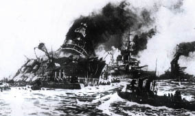

18 Mart hücumunda Çanakkale Boğaz’ının kuşbakışı görünüşü.
Deniz subay ve yazarlarımızdan Ahmet İhsan Bey, o zamanki Bahriye Nezareti tarafından neşredilen “Mecmua-i Seneviye-i Bahriye” de 18 Mart savaşını şöyle anlatır:
“18 Mart; sabahleyin erkenden Amiral “Von Usedom” Paşa ile Mevki-i Müstahkem Kumandanı Cevat Paşa’nın muhaveresi neticesi olarak Binbaşı “Schneider” ve Kıdemli Yüzbaşı “Serno” Beyler[6] , tayyare ile keşifler yapmak üzere emirler telâkki ediyorlardı.
“O sabah hava sakin, güneşli; deniz durgundu. Kıdemli Yüzbaşı “Serno”, hemen Çanakkale’den kalktı; 1000 metre irtifaa kadar yükseldi. Râsıt[7] mevkiinde Binbaşı Schineider bulunuyordu.
Tayyare, batıya doğru uçuşuna devam ediyor; boğaz methalinde, âdetleri veçhile, iki düşman zırhlısı ve ayrıca borda nizamında dört destroyer görünüyordu.
Biraz sonra İngilizlerin gerilerinden ve “Merkep” Adalarının batı cihetinden doğru altı büyük, üç küçük düşman harp gemisinin prova nizamında, Boğaz’a yaklaştığı müşahede, edildi. Uçak bu gemilerin üstünde dolaşmaya başladığı vakit, bu gemilerin “Queen Elizabeth”, “Lord Nelson”, “Agamem-non”, “Triumph”, “Inflexible” hattı harp gemileriyle üç küçük kruvazörden ibaret olduğu anlaşıldı.
Sol tarafta, Bozcaada yakınında mevki almış olan Fransız amiral gemisinin işaret sereninde rengârenk flama ve bandralar dalgalanıyordu. Bu sırada dört Fransız zırhlısı da virademir ederek prova nizamına geçiyor; İngiliz gemilerini takibe başlıyordu.
18 Mart sabahı Boğaz’a yaklaşan bir sürü düşman zırhlısını: “Boğazı geçmezsiniz!...” kükreyişiyle yüz geri etmeğe mecbur bırakan mübarek Mehmetçik, iman dolu göğsünü dev güllelere karşı kalkan yapmaya
hazırlanırken...
Tayyaremiz düşman filosu üzerinden geçti; altında patlayan şarapnellerin hâsıl ettiği ufak beyaz bulutlar, bütün yolu boyunca tayyareye refakat ediyordu. Râsıt düşmanın hareket üssü olan Bozcaada yakınında sekiz tane eski zırhlı daha saydı. Bu gemilerden başka iki tamir gemisi, kömür nakliyeleri, hastane gemileri, mayın arama tarama tekneleri, denizaltılar ve destroyerler, büyük bir donanmanın yardımcı kuvvetleri olarak burada yatıyorlardı.
Uçak artık Çanakkale’ye dönüyordu. Râsıt makineden sıçrayarak yere indi:
• Düşman geliyor! haberini verdi.
Saat 11.30’da düşman filosu, on parça büyük zırhlı ile bombardıman mevzii alıyordu.
Boğaz’ın Anadolu sahilinde sağ cenahı, “Triumph”, “Bouvet” zırhlıları teşkil ediyor; Rumeli tarafında da “Gaulois” ve “Charlemagne” Fransız zırhlıları mevki alıyordu.
Bu dört gemi Boğaz’ın methalinden bir mil kadar içeri girmiş bulunuyorlardı.
Biraz daha gerilerde, sağ ve sol kanat arasında kalan genişçe fâsılada “Lord Nelson”, “Agamemnon”, “Queen Elizabeth” ve “Prens George” İngiliz zırhlıları görünüyordu. Sağ kanattan 3 kilometre kadar geride de Fransızların “Suffren” zırhlısı ve İngilizlerin “Inflexible” muharebe kruvazörleri ağır ağır, ileri geri hareket ediyorlardı.
Saat 11.40’ta düşman gemileri ateşe başladılar.
Zırhlılar daima aynı kerterizde ateş edebilmek için yavaş manevra yapıyorlar; bütün gün yavaş, yavaş boğazın içine sokuluyorlardı. Sağ kanattaki iki düşman zırhlısı obüs mevzileriyle “Dardanos” istihkâmına ateş ediyorlardı. “Queen Elizabeth” dretnotuyla “Lord Nelson”, “Agamemnon” zırhlıları ve “Inflexible” muharebe kruvazörü Hamidiye (Anadolu) istihkâmını ve Mecidiye, Hamidiye (Rumeli) ve Namazgâh istihkâm ve tabyalarını hedef seçmiş, “Gaulois” ile “Charlemagne” Fransız zırhlıları da taret toplarıyla yaylımlar yaparak, çok defa tekrar veyahut çifter toplarıyla atışlar yapan İngiliz zırhlılarını destekliyorlardı.
Tecavüz gayreti veya asabiyet, hemen Fransızları ileri sürmüştü. Bunlar, pek kararsız bir manzara gösteriyorlardı.
Düşman gemilerinin toplarından fırlayan dumanlar, yağmurlu havalarda dağları saran sis tabakaları gibi, kâh top top, kâh parça parça uzun peçeler halinde, Boğaz’ın her yerine yayılıp dağılıyordu.
Fransız gemilerinin taretleri, yaylım ateşlerden çatallı alevler içinde kalıyor; İngiliz zırhlılarının bordalarında şimşekli helezonlar peyda oluyordu..
Çanakkale kıyılarında zelzeleyi andırır sallantılar olmakta, denizin üstündeki hava tabakaları, mermi patlamalarıyla, titremekte idi. Gülleler, düşmanın batarya sandığı, kum tepelerini deviriyor, toprak siperleri allak bullak ediyordu.
Mermilerin isabetiyle karadan ve denizden yüzlerce toz ve su sütunları yükseliyor; bunlar arasında, bilhassa “Hamidiye” istihkâmına karşı ateş ederek istihkâmı kökünden yıkıp atacak gibi şiddet ve dehşet arz eden 38 santimetrelik İngiliz toplarının kaldırdığı sütunlar dikkati çekecek korkunç bir manzara yaratıyordu. Mermilerin denizin yüzüyle temasında peyda olan su sütünları âdeta birer minare şeklinde havaya kalkıyor, bir saniye içinde heyetiyle istihkâm önünde kalıyor, biraz sonra rüzgâr sağanağıyla bir tarafa atılarak velvele içinde kale önünde yıkılıyordu.
Çanakkale ile Kilitbahir arasında çelik yağmurlarıyla kaynaşan denizin yüzü, hiddet veya ıstıraptan âdeta köpürüyordu.
18 Mart hücumunda Çanakkale Boğaz’ının kuşbakışı görünüşü.
Öğleyin “Eskiçimenlik” istihkâmındaki pek eski kule harap oluyor, bir obüs, minarenin üst kısmını alıp götürüyordu.
Karşıda Kilitbahir kışlaları alevler içinde bulunuyor, bataryalar civarındaki evler vesaire tutuşmuş yanıyordu.
Kalelerimizdeki efrat, tamamıyla mahfuz siperler içinde bulunuyorlardı. Düşman, toplarımızın tesirli menzili içine girip de atış sıhhatinden emin bulunulmadıkça toplar kullanılmıyordu.
Öğleden sonra saat 1.20’de Hamidiye istihkâmından ateş başladı.
Yarım saat sonra da Fransız “Bouvet” zırhlısının, bir tarafına yatmış olduğu halde, methale doğru çekilmek zorunda kaldığı görülüyordu.
Aynı zamanda Kilitbahir tarafındaki üç istihkâmımız da “Gaulois” ile “Charlemagne” zırhlılarını ateş altına almışlardı. Bu sırada “Gaulois” o derece ağır yaralı idi ki, şayet bu Fransız zırhlısı alelacele Boğaz’dan çekilip “Merkep” adasında karaya oturtulmamış olsaydı batıp gideceği muhakkaktı[8].
“Bouvet” ye gelince, bu Fransız zırhlısı istihkâmların ateş sahasından çıkıp “Kepez” burnunun gerisine çekilmişti. Bu vaziyette “Dardanos” bataryasının ateşine hedef olmak lâzım geliyordu. Halbuki bu batarya, siperlerine karşı açılan ateşlerin tesiriyle, halen kum içine gömülmüştü.
Bu hengâme arasında “Bouvet” nin bordasında bir tarak işitildi. Gemiyi saran dumanlar içinde fark edilebilen direğin sağ tarafa meyletmiş olduğu görülüyordu. Saat 2.03 te, “Bouvet” sancağa devrilerek alabora oldu, omurgası su yüzüne döndü. Koca zırhlı birkaç dakika da bu vaziyette kaldı. Mürettebat, can havliyle karineye tırmanmağa çabalıyorlardı. Destroyerler vaka mahalline koştular. Bu destroyerlerden biri, bir mermi isabeti alarak battı.
“Majestic”, “Suffren”, “Charlemagne” ve “Triumph” zırhlıları, bu esnada kazazede zırhlıya yaklaşmış, istimbotlarını mayna etmişlerdi.
O zamana kadar boğaz methalini müthiş bir uğultuya boğan korkunç ateş artık gevşemiş, ağırlaşmıştı.
Bu arada, sabahtan beri Bozcaada civarında ihtiyat olarak kalan altı düşman zırhlısı da geldi, muharebe hattını takviye etti.
Bunun üzerine muharebenin başlangıcından beri bombardımana iştirak etmekte bulunan bazı gemiler değiştirildi.
Saat üçe doğru ise bombardıman, eski şiddetiyle yeniden devama başlıyordu.
Bombardımanın tesirlerini keşif ve tahkike kalkan bir İngiliz tayyaresi, bir Osmanlı uçağı tarafından takip edilip kovalandı.
Saat dört sularında (Irresistible) İngiliz zırhlısı, Hamidiye istihkâmına iyice yaklaşmış bulunuyordu. Yirmi dakika sonra bu zırhlının bir yana yattığı ve bacalarından beyaz dumanlar, buharlar çıktığı görülüyordu.
“Irresistible”, bu esnada hareketsiz kalarak akıntının keyfine tâbi olmuş; obüs bataryalarının ateş sahasına doğru sürükleniyordu.
Bir aralık birdenbire doğrulur gibi oldu; fakat topları işlemiyordu. Taretleri son ateş vaziyetini muhafaza etmekte idi. Mürettebatı yara kapama ameliyatıyla uğraşıyorlardı.
Saat beş sularında mürettebatını kurtarmak üzere destroyerler yaralı İngiliz zırhlısına yaklaştı. Mürettebat, güverteye tabur olmuştu, fakat Türk obüs ateşlerinin tesiriyle herkes kaçışmaya başlıyordu.
Bu durum karşısında düşman ateş hattını takviye için, Bozcaada’dan son iki zırhlısını da çağırdı. Mamafih artık hücumunun akim kaldığı anlaşılıyordu. Düşman zırhlıları artık Bozcaada’ya doğru yol vererek birer, ikişer dönüyorlardı.
İlk dönenler arasında “Ocean” İngiliz zırhlısı bulunuyor; bu zırhlının da birdenbire bir tarafa fena halde yattığı görülüyordu. Gemi, pek ağır bir hareketle Boğaz’ın methaline sürüklenmek istediği halinden anlaşılıyordu.
“Ocean” zırhlısı, “Halileli” açıklarında iken büyük bir ihtimalle, sancak tarafına doğru bir kavis resmetti. Bu esnada bir tarafına pek ziyade yatmış, bataryalara karşı susmak mecburiyetinde kalmıştı.

18 Mart hücumunda Fransız filosuna ait “Bouvet” zırhlısı batarken.
Bu ana kadar topları harbe hazır bir hale konulmuş olan “Dardanos” istihkâmı da “Irresistible” zırhlısına karşı ateş açmaya başlıyor ve saat yedide bu yaralı düşman zırhlısını denizin dibine gönderiyordu.
Dardanos bataryalarının tekrar canlanması, düşman ateşini de yeniden faaliyete sevk etti.
Bütün düşman gemileri, altı saatten fazla bir müddet, olanca ateş kudretleriyle dövüp susturmuş olduğunu sandıkları kahraman Türk istihkâmının yeniden atışa başlaması, yeis ve hiddetinden çıldırmış gibi, “Dardanos” u yeniden müthiş bir ateş altına aldılar.
Fakat yiğit Türk topçuları düşmanın bu ateşine mukabele ediyorlar, hattâ bu arada, düşmanın yine susturmuş olduğunu sandığı “Mecidiye” istihkâmını da ateşe başlayarak “Dardanos” bataryalarına yardıma seğirtiyordu.
Görülüyor ki o dehhaş[9] ve öldürücü ateş Türk istihkâmlarını susturamamıştı.
* * *
Akşamüzeri saat altıda düşmanın hareket edebilecek bütün gemileri geri çekilmeğe başladılar.
Hepsinde de yaralar, rahneler[10] vardı.
“Inflexible” muharebe kruvazörünün baş tarafında köprü üstü yüksekliğine kadar çıkan alevler yükseliyordu. Sonradan anlaşıldığına göre bu yepyeni İngiliz vahidi harbi torpido dairesi hizasından bir mermi veya mayın isabeti almış ve neticede gemi muharebeden sakıt olacak derecede ağır hasara uğramıştı.
“Queen” ve “Lord Nelson” İngiliz zırhlıları da obüs bataryalarımızın ateşlerine maruz kalarak duman ve alevler içinde kalmışlardı.
* * *
O unutulmaz 18 Mart günü akşamı, gecenin ilk gölgeleri Boğaz sularına düşmeğe başladığı vakit bu sularda yalnız methalden dışarı çıkmak üzere manevra yapan “Triumph” zırhlısıyla akıntıya tâbi olarak bataryaları ateş sahasından dışarıya sürükleyen “Ocean” zırhlısının yardımcı destroyerlerle çevrili bir halde olduğu görülmekte idi.
Atatürk Çanakkale’de.
Ertesi sabah Boğaz’ın karanlık suları üzerinde üç büyük yapı tabakası görülüyordu. Bunlar tıpkı kabristanlardaki mezar taşları gibi, Türk mermileri altında sulara gömülüp batan düşman zırhlılarından arta kalan nişanelerdi. Bu nişaneler, “Irresistible”, “Bouvet” ve “Ocean” hattı harp gemilerinin enkazının üzerinde belirmişlerdi.
18 Mart hücumunda, bir Fransız filosuyla takviye edilen o koca İngiliz donanmasının püskürtülmesi, Türklere üç zabitle yirmi şehit askere ve iki zabitle yetmiş yedi yaralı askere mal olmuş, fakat dünyanın en büyük deniz kuvvetleriyle yapılan bir hücum Türk azmi, Türk metaneti karşısında hazin bir hezimetle neticelenmiş oluyordu.”